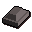
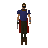

Steel sq shield
| Config name | steel_sq_shield |
| Item id | 1177 |
| Value | 600 gp |
| Weight | 8lb |
| Members | No |
| Tradeable | Yes |
| Stackable | No |
| Equip slot | lefthand |
| Options | Wield |
| Category | armour_shield |
| Defined in | scripts/skill_combat/configs/melee/shields.obj |
| Equipment stats | Magic att -6, Range att -2, Stab def 12, Slash def 13, Crush def 11, Range def 12 |
Steel sq shield
A medium square shield.
How to make
| Skill | Level | XP | Ingredients | Tool | How | Where | Makes |
|---|---|---|---|---|---|---|---|
| Smithing | 38 | 75.0 |  Steel bar ×2 | interface | anvil | 1 |
Dropped by
| NPC | Level | Quantity | Rarity | Via | Notes |
|---|---|---|---|---|---|
 Bandit | 22 | 1 | 1/64 (1.56%) |
Sold at
| Shop | Shopkeeper | Stock |
|---|---|---|
| Cassies' Shield Shop. | 0 |
Referenced in scripts
scripts/drop tables/scripts/bandit.rs2scripts/levelrequire/scripts/tier5.rs2scripts/levelup/scripts/levelup_unlocks_smithing.rs2